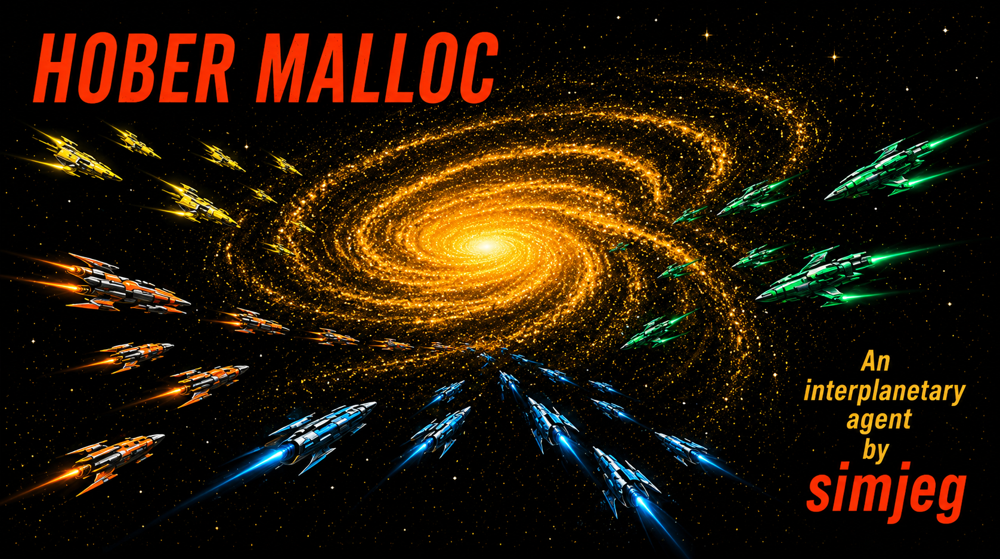
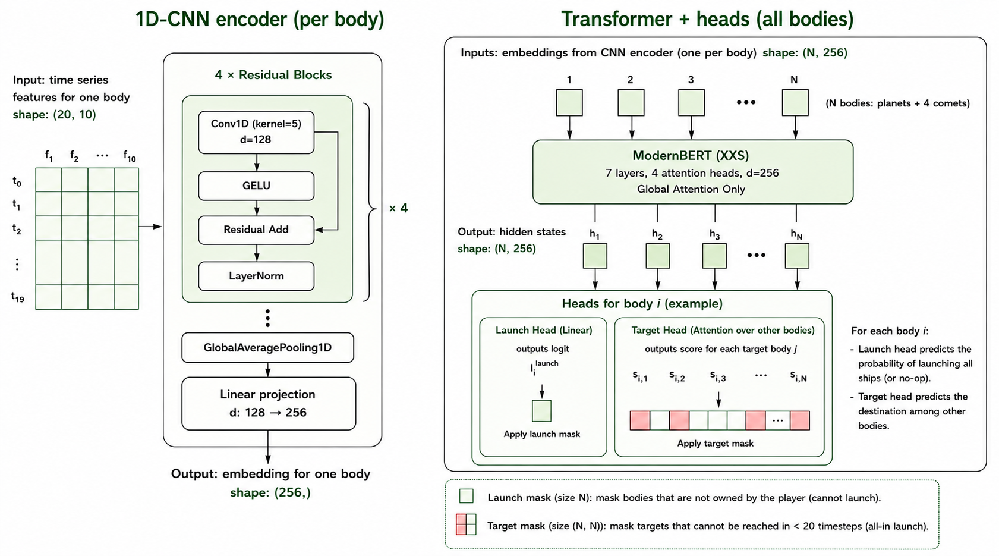

Image inspiration: David Kyle’s cover art for the first edition of Isaac Asimov’s Foundation. Hober Mallow is one of the novel’s central characters, whose actions play a key role in the Foundation’s expansion.
Many thanks to Kaggle and especially to @bovard and @addisonhoward for organizing such a fun competition. It was my first simulation competition and as usual with Kaggle I learned a ton. I initially reached the top 50 with hand-crafted heuristic/search agents, but after reading the post from @lightmk and write-ups from previous simulation competitions, I switched to deep learning approaches. Imitation Learning (a.k.a behavioral cloning) got me in the top 10, finetuning with reinforcement learning (RL) I reached the top 5, and in the very last days of the competition, I started training from scratch with RL (kind of my AlphaGo -> AlphaZero moment 😄).
Code to reproduce my two final submissions is available here.
🛰️ Overview
I trained a single neural network - ModernBERT on top of 1D-CNN embeddings with 4.3M parameters - for both 2p and 4p, using self-play from scratch for 10B steps. I simplified the action space to only two possible actions per body (planet or comet): do nothing (no-op action) or launch all available ships (all-in action) toward a short-distance target (ETA < 20).
🏗️ Architecture
The model consists of 3 modules:
- A 1D-CNN encoder (290K parameters), which encodes each body - planet or comet - into a continuous embedding
- A ModernBERT transformer (3.9M parameters), taking as input a set of
Nembeddings, whereNis the number of planets plus 4 comets 2N+1heads (130K parameters), two action heads per body (launch head and target head), and one global value head used for PPO training

Feature space
For a body b and a timestep t, I extracted 10 features f(b, t):
| feature | description |
|---|---|
timestep |
Timestep t |
production |
Body production value. Constant. |
radial_coordinate |
Body distance from the map center. Constant except for comets |
angular_coordinate |
Body angular position around the map center. Constant only for fixed planets |
player_ships |
Player ships on the body at t |
neutral_ships |
Neutral ships on the body at t |
opponent1_ships |
Opponent 1 ships on the body at t |
opponent2_ships |
Opponent 2 ships on the body. 0 if only 2 players remain |
opponent3_ships |
Opponent 3 ships on the body. 0 if only 3 players remain |
ships_for_capture |
Additional ships the player would need at t to own the body after combat resolution |
At most one *_ships feature can be non-zero, indicating which player owns the planet at timestep t. In most cases, ships_for_capture is simply 0 if the body is owned, or max(*_ships) + 1 if it is not, but this is not always true when 3 or 4 players remain.
I then computed the time series x(b) = [f(b, t), f(b, t+1), ..., f(b, t+T)] with T=19 to represent the future states of this body assuming no fleet is launched after t. In other words I simply ran the environment T times from the state at t with no new action, and computed f(b, t+i) iteratively. This time series explicitly encodes body properties and geometry, and implicitly captures the impact of all existing fleets over the next timesteps. For instance, the player_ships feature can be positive in the first timesteps and then become 0, signaling a capture by an opponent. Four slots are always reserved for comets, even if not present at a given timestep t (using 0 everywhere except for the t row).
1D-CNN encoder
The 1D-CNN is a stack of 4 residual blocks - Conv1D (k=5) -> GELU -> Residual -> LayerNorm - applied to each body's timestep features, followed by a GlobalAveragePooling1D layer and a Linear projection from d=128 to d=256. It was inspired by this competition write-up from @cpmpml and @pdnartreb.
ModernBERT transformer
The ModernBERT transformer follows the XXS configuration proposed in the Ettin Encoder series: 7 layers, 4 attention heads and d=256. The only modifications are:
- No token embedding table, since the model uses the 1D-CNN embeddings as inputs
- No positional encoding, since the geometry is already encoded in the 1D-CNN embeddings
- Global attention only - no local attention - since the maximum input length is
N=44(40 planets and 4 comets).
Heads and masking
For each body b, I decomposed the action into:
- A launch head that predicts the probability that
blaunches a fleet, using a linear projection on top of hidden states - A target head that predicts the target of this fleet, using an attention head over the hidden states of the other bodies
During both training and inference, two action masks are computed at each timestep t:
launch_mask(t)of sizeN, which masks bodies that are not owned by the player, since it is not possible to send a fleet from a planet we do not owntarget_mask(t)of size(N, N), wheretarget_mask[i, j]is valid only if planetican reach planetjin less thanTtimesteps with an all-in launch. This mask might be incorrect in the very unlikely case of an interception by a comet that has yet to spawn.
Finally, a value head is added on top of the average of the last hidden states over the N bodies for PPO training.
Inference
Features, masks, and conversion of model outputs to the [from_planet_id, direction_angle, num_ships] action format are implemented in Rust. Neural network inference is performed using Jax. Test time augmentation is used by averaging the model predictions over 4 views when 2 players remain (4 rotations for the angular_coordinate feature: 0, π/4, π/2, 3π/4), and 8 views when 3 or 4 players remain (4 rotations combined with 4 permutations of the opponent*_ships rows). Launches are triggered when the launch probability exceeds a threshold of 53% (submission 1) or 56% (submission 2), and are enforced for owned comets leaving the board during the next timestep.
🎭 Imitation learning (IL)
Note: I did not use IL in my final submissions, so you can skip this section.
In LuxAI Season 3, several gold-medal solutions relied on IL only - for example the 3rd-place solution - so I decided to start with IL before going into RL.
I noticed a few patterns when looking at replays from top players:
- With very few exceptions, they launched at most one fleet per body
- The two most common actions were by far
no-opandall-in - Launches were often limited to short distances, typically with ETA < 20
My latest IL dataset contained 5M samples - 54% 2p and 46% 4p - from 20K episodes filtered from the 189K episodes shared by @bovard here, between May 6th (the last significant environment update) and June 14th. I used the following filters:
- The player either had a score > 1500, regardless of whether they won or lost the episode, or won against a player with a score > 1500 (scores were retrieved from Meta Kaggle Dataset)
- The player only used
all-inactions, with any ETA, during the episode, with a tolerance of 3 steps that did not respect that rule
I trained models using PyTorch Lightning with binary cross-entropy for the launch head (weight = 5.0) and categorical cross-entropy for the target head (weight = 1.0), and later finetuned them on a similar dataset with a stricter score threshold of 1600. Here are the results I obtained on a test set of 45K samples from ~200 independent episodes (AP = average precision, acc = accuracy):
| Finetuned | Rotation TTA | Opponent TTA | Launch AP | Target acc@1 | Target acc@2 |
|---|---|---|---|---|---|
| 81.73 | 79.86 | 93.84 | |||
| ✓ | 83.00 | 80.90 | 94.57 | ||
| ✓ | ✓ | 83.77 | 82.07 | 95.00 | |
| ✓ | ✓ | ✓ | 83.80 | 82.12 | 94.99 |
These experiments allowed me to reach the top 10 in early June, but more importantly helped me narrow down the feature space, neural network architecture, and action space. Several things I tried and later dropped based on those experiments:
- A third action head to predict fractions of ships to send (25%, 50%, 75% or 100%) instead of using
all-inactions only - Higher values of
Tthan 20 (e.g. 30 or 50), since my model is blind to fleets arriving beyond that horizon - Smaller or larger CNNs and transformers
- Using the target mask as input through attention positional bias, which led to faster convergence but similar results
- Various data filtering methods
🐡 Reinforcement Learning (RL)
I had never done RL before this competition, except maybe in this notebook for the Santa 2024 competition. After reading about REINFORCE, A2C, and PPO, previous competition write-ups and discussion posts, I decided to use PPO with the PufferLib library, given its claims about speed. To use PufferLib properly, I had to port the feature and mask construction from Rust to C and the model from Torch to CUDA. What would have been impossible for me a year ago was done by Codex and GPT-5.5 within a few minutes. I used an 8xH100 machine to run training and reached around 40K steps per second with this implementation.
During my experiments, I encountered two main issues:
- The agent never launched
- In 4p, the four agents neutralized each other and the game ran for 500 steps
For the first issue, I:
- Manually shifted launch logits to higher values when initializing the model from an IL checkpoint
- Used a 5x larger entropy coefficient for the launch distribution than for the target distribution to encourage exploration
- Stopped the rollout after 40 timesteps with no actions (maybe this was a bad idea, given the latest @pressman1 replays)
For the second issue, I:
- Updated the rewards from -1 for losing and +1 for winning, to -1 for losing, +0.5 for winning after 500 timesteps, and +1 for winning before 500 timesteps
- Used a pool of frozen checkpoints for 2 out of 4 seats in 4p, a strategy I dropped for the final training run
I did a poor job of ablating the modifications above, so it is very possible that some of these tricks were useless. In my latest training runs, the fraction of rollouts discarded because of 40 consecutive no-op actions was below 1%, the average 2p episode length was ~200, and the average 4p episode length was ~460.
Only five days before the end of the competition, I started training from scratch, and it quickly outperformed the models initialized with IL. I wish I had tried it earlier, because it would have made it easier to explore alternative architectures or wider action spaces. My final model was trained for 10B steps - 1M steps per epoch - in three 24-hour stages of 3B, 3.5B, and 3.5B steps, respectively, with decreasing learning rates: 1e-3, 3e-4, and 1e-4. Here are the main configuration parameters I used:
[vec]
total_agents = 1024
num_buffers = 8
num_threads = 16
[env]
four_player_prob = 0.4 ; 40% of the games sampled as 4p
reward_timestep_limit = 0.5 ; winner reward is reduced to 0.5 if the game reaches the 500-step limit
max_no_op_steps = 40 ; rollout is stopped after 40 steps without actions
feature_rotation_augmentation = 1 ; data augmentation on angular_coordinate row
feature_enemy_permutation_augmentation = 1 ; data augmentation on opponent*_ships rows
[train]
gpus = 8
total_timesteps = 3_000_000_000 ; for stage 1, then 3_500_000_000 for stages 2 and 3
horizon = 128 ; 1 epoch is horizon * total_agents * gpus = ~1M steps
gamma = 0.995
gae_lambda = 0.97
learning_rate = 0.001 ; for stage 1, then 0.0003 for stage 2 and 0.0001 for stage 3
min_lr_ratio = 0.01 ; cosine decay
; lr_warmup_timesteps = 50_000_000 ; linear warmup, only for stages 2 and 3
; lr_warmup_start_ratio = 0.01
minibatch_size = 4096
clip_coef = 0.2
launch_ent_coef = 0.01 ; entropy coefficient for launch head
target_ent_coef = 0.002 ; entropy coefficient for target head
vf_coef = 0.5 ; coefficient for value head
📈 Evaluation
Evaluation in a simulation competition is quite different from building a cross-validation strategy that correlates with the public leaderboard score. Very early in the competition, I built a fast local arena in Rust to evaluate my hand-crafted agents, and I used throughout the competition. It supported two main modes:
- Run a set of matches between 2 agents in 2p or 4 agents in 4p
- Create a local leaderboard, either in 2p or 4p, using a pool of agents. I used OpenSkill to try to mimic the matchmaking and scoring system used on Kaggle, even though as far as I know, it is unknown.
🚧 Things I would try next
I am very happy with my final solution: an almost naive action space, a single model for both 2p and 4p, based on 10 simple features, and trained from scratch with self-play. Here are a few things I would have explored with more time, now that my setup allows me to train from scratch with RL:
- Separate models for 2p and 4p, although using a single one is nicer 😀
- A more complex action space, for example going back to fixed fraction buckets as @ferdinandlimburg appears to be doing based on replay data
- A longer horizon than
T=20, because I cannot quite bring myself to believe that a model blind to arriving fleets beyond 20 timesteps is optimal - An explicit encoding of possible actions through the PairFormer architecture used in AlphaFold. I thought about using a time series for each pair of bodies
(i, j)with three features: the timestept, and the minimum and maximum number of ships that can be sent fromitojwith ETAt.
I cannot wait to learn what @pressman1 has cooked up. He has been crushing this competition for weeks now, huge congrats to him 👏 Update: after reading his write-up, I would obviously scale the transformer, and maybe replace the 1D-CNN by a simple linéaire projection with flattened features
🌱 Lessons Learnt
Perseverance, speed and rigor: I believe these qualities are essential in a Kaggle competition, and I tried my best to embody them (although my RL experiments could probably have been more rigorous). This was the first solo competition I completed end-to-end with the goal of reaching Grandmaster rank, and I’m now confident I will get there 🥳
Coding Agents: This competition was also the opportunity for me to learn how to work with coding agents like Claude Code or Codex. While they clearly made me faster and removed barriers like “let’s rewrite this environment in Rust,” I also realized that we did not go from autocomplete to a fully autonomous Kaggle agent overnight. I spent some time experimenting with autoresearch-like approaches for rule-based agents, but they quickly plateaued, as @addisonhoward also reported here.
Reinforcement Learning: While I have been doing deep learning for years now, this was my first hands-on experience with RL. I was fascinated by AlphaZero when it came out in 2017, and I was equally fascinated to see how far I could get here with self-play alone. Coding agents are a great example of how RL (RLVR) can build on imitation learning (LLM pretraining) and I believe this is only the beginning (see, for instance, the Era of Experience paper), so learning more about RL felt important to me.